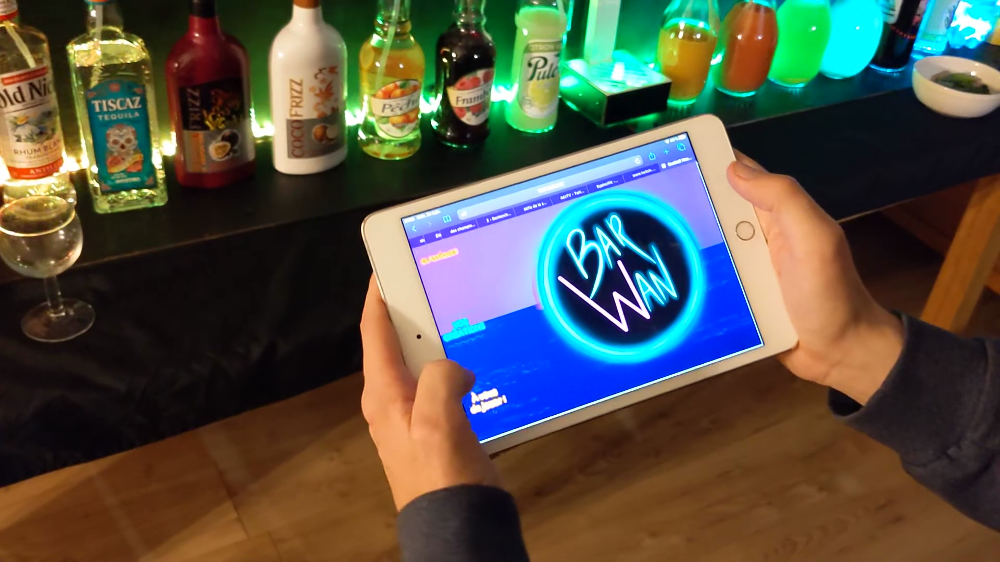
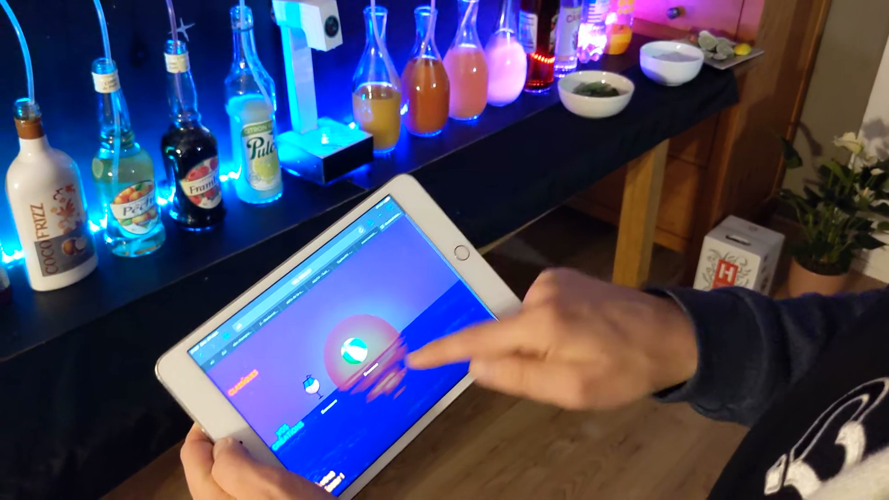
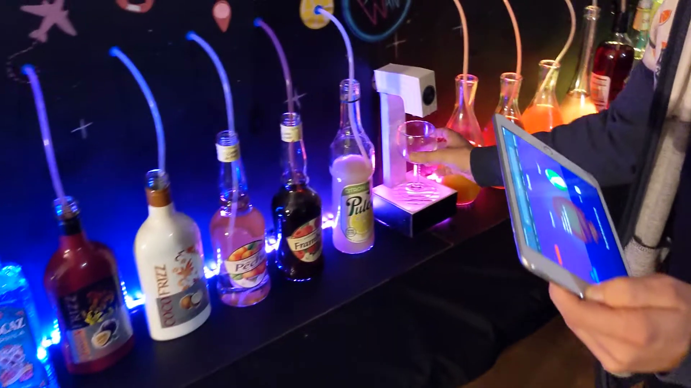
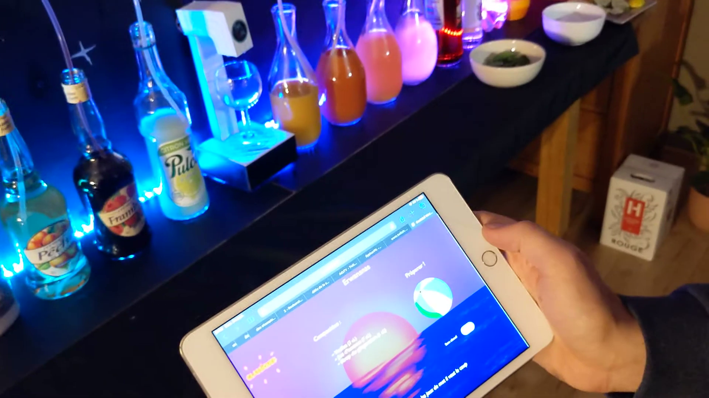
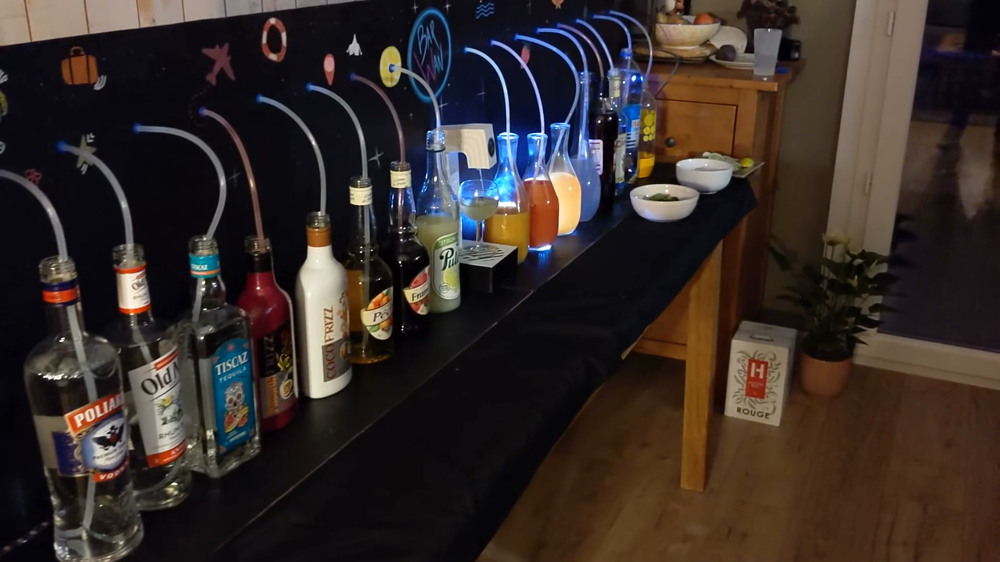
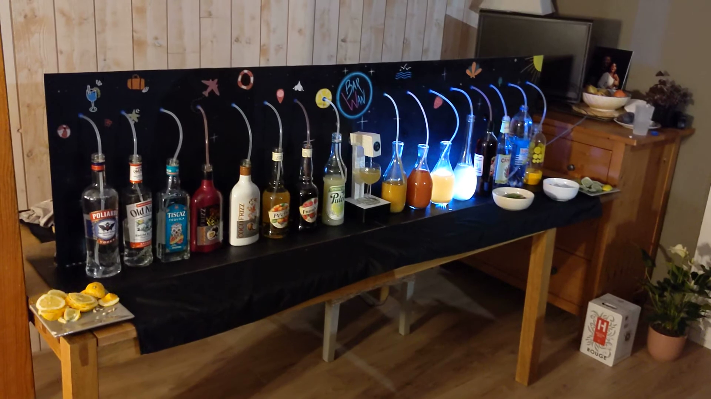
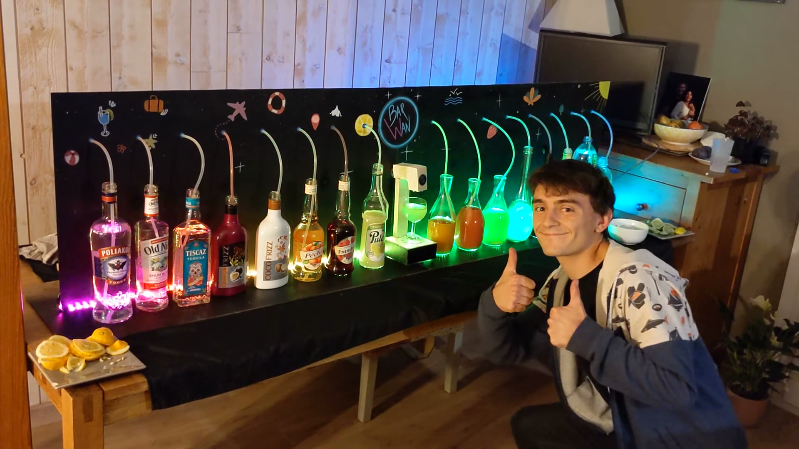

🍹 Le projet
L'idée de ce projet m'est venue en commençant l'organisation d'une soirée. Je me demandais quel cocktail je pouvais préparer. Mojito ? Trop classique... Punch ? Déjà fait... Piña colada ? Tout le monde n'aime pas la noix de coco... Si seulement chacun pouvait avoir son cocktail préféré, mais sans passer la soirée à chercher les ingrédients et nettoyer le shaker... Je sais !
Le BarWan est donc un bar connecté préparateur de cocktails. Grâce à une application web accessible depuis une tablette, il permet de préparer n'importe quel cocktail au centilitre près, depuis une recette déjà existante ou bien avec sa propre création.
❓ Comment ça marche ?
L'utilisateur commence par prendre la tablette mise à disposition à côté du BarWan, sélectionne un cocktail et envoie sa commande. Une carte électronique programmable reçoit la commande en WiFi et active des pompes disposées derrière chaque bouteille concernée. Cela permet à chaque liquide d'être pompé dans des tuyaux souples depuis la bouteille vers le robinet central, sous lequel on a préalablement placé son verre.
Reste plus qu'à touiller un peu, ajouter un glaçon, éventuellement quelques ingrédients (feuilles de menthe, tranche de citron...) et à déguster !
📱 L'application
Deux options sont possibles pour commander son cocktail :
• Choisir un cocktail existant parmi la sélection des recettes classiques
• Choisir une création inédite dont la recette a été élaborée par un invité pendant la soirée
Pour les plus créatifs, il est possible de se rendre dans la partie « À vous de jouer ! » pour préparer soi-même une nouvelle recette de cocktail et l'enregistrer parmi les créations des autres invités.







✨ Les petits plus
• Pour chaque cocktail, il est possible d'activer l'option « Sans alcool » avant d'envoyer sa
commande
• À la fin de la soirée, on obtient un historique des commandes permettant d'en tirer quelques
statistiques (nombre de commandes, cocktail le plus demandé, etc.)
🎨 Design
Tous les designs et dessins ont été réalisés par la talentueuse Aurianne D. ! Allez lui envoyer de la force sur son compte Instagram @damisdrawings.